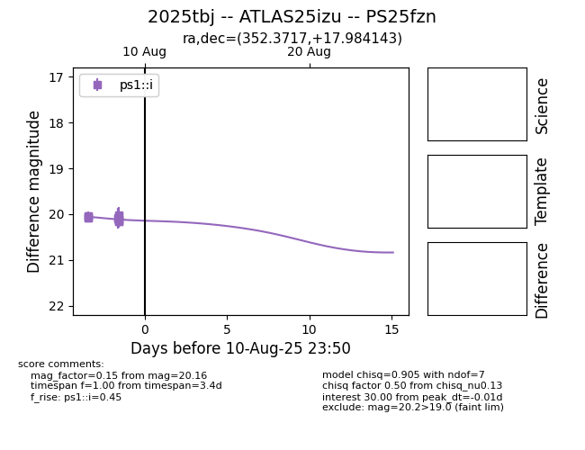

Target 2025tbj at 2025-08-09 05:37, see:
TNS: wis-tns.org/object/2025tbj
YSE: ziggy.ucolick.org/yse/transient_detail/2025tbj
alt names
2025tbj (yse,tns)
ATLAS25izu (atlas)
PS25fzn (panstarrs)
coordinates:
equatorial (ra, dec) = (352.3717,+17.98414)
galactic (l, b) = (96.8822,-40.70573)
photometry
last ps1::i=20.07
4 ps1::i detections
